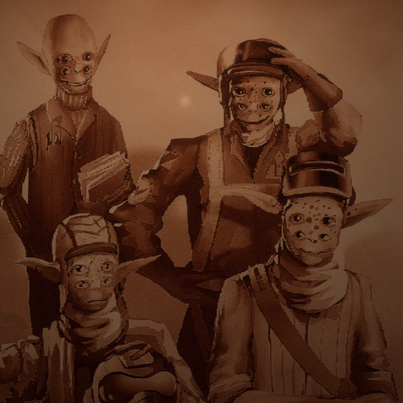

Outer Wilds Ventures
This is an unofficial Website!
Welcome to Outer Wilds Ventures!
Outer Wilds Ventures was founded by Feldspar, Gossan, Slate and Hornfels
with the goal of exploring the Solar System to improve Hearthian understanding
of the Solar System and of the Nomai, an ancient race that once lived in the Solar
System. It accomplishes this by training aspiring astronauts and equipping them with
advanced space exploration technology. The recruits are then sent into space with
the goal of learning about the Solar System, the mysterious Nomai, and to retrieve
any artifacts they believe to be significant.

Lets meet the Team!

Hornfels
Founding member. Ground control for Outer Wilds Ventures and curator for the museum.

Gossan
Founding member. Flight instructor for recruits of Outer Wilds Ventures.

Slate
Founding member. Mechanic for Outer Wilds Ventures.

Feldspar
Founding member. Veteran astronaut. Has been missing for some time now. Whereabouts unknown. Played the harmonica.

Esker
Director of the Lunar Outpost on The Attlerock. Avid whistler.

Riebeck
Astronaut/Archeologist. Currently located under the crust of Brittle Hollow. Plays the banjo.

Chert
Astronaut/Astronomer. Currently located on the north pole of Ember Twin, updating the observatory star charts. Plays the drums.

Gabbro
Astronaut. Currently located on a island Giant’s Deep. Plays the flute.